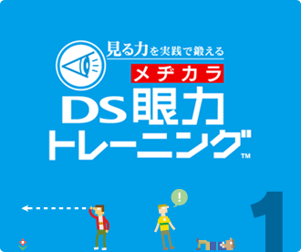
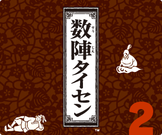

|
|  |
 |
梅雨入り近し。たまの晴れ間が恋しい季節になりましたね。じつは最近のマイブームは二者択一のアンケート内容を考えることだったりします。というのも、Ｗｉｉチャンネルに『みんなで投票チャンネル』という二者択一のアンケートに答えるコンテンツがあるのですが、アンケート内容をユーザーの投稿からも採用していて、ただいま気軽に投稿中です。ユーザー参加型のＷｉｉチャンネルって他にも色々と可能性を秘めている気がしています。
さて、今月号で紹介するのは2タイトル。まずは『見る力を実践で鍛えるＤＳ眼力トレーニング』です。数々の学ぶ・鍛えるソフトが登場しているニンテンドーＤＳですが、今回鍛えるのは「眼力」！……って何ですか？ という人がほとんどですよね。でも、ご心配なく。ソフトの監修を行った石垣教授のインタビューを通じて眼力の重要性をヒシヒシと感じてもらえるかと思います。そしてパズルゲームとボードゲームの楽しさを見事に融合させた『数陣タイセン』にも注目です。ここはやはり思考型ゲームにおける対戦の魅力を伝えたいと、制作を担当した株式会社ミッチェルへ道場破りも兼ねたインタビューを敢行しました。お楽しみに！
さて、今月号で紹介するのは2タイトル。まずは『見る力を実践で鍛えるＤＳ眼力トレーニング』です。数々の学ぶ・鍛えるソフトが登場しているニンテンドーＤＳですが、今回鍛えるのは「眼力」！……って何ですか？ という人がほとんどですよね。でも、ご心配なく。ソフトの監修を行った石垣教授のインタビューを通じて眼力の重要性をヒシヒシと感じてもらえるかと思います。そしてパズルゲームとボードゲームの楽しさを見事に融合させた『数陣タイセン』にも注目です。ここはやはり思考型ゲームにおける対戦の魅力を伝えたいと、制作を担当した株式会社ミッチェルへ道場破りも兼ねたインタビューを敢行しました。お楽しみに！
■Ｎ.Ｏ.Ｍのバックナンバーページへ ■Ｎ.Ｏ.Ｍ６月号のサイトマップページへ
見る力を実践で鍛える ＤＳ眼力トレーニング：© 2007 NBGI © 2007 Nintendo
数陣タイセン：© 2007 Nintendo / MITCHELL
数陣タイセン：© 2007 Nintendo / MITCHELL